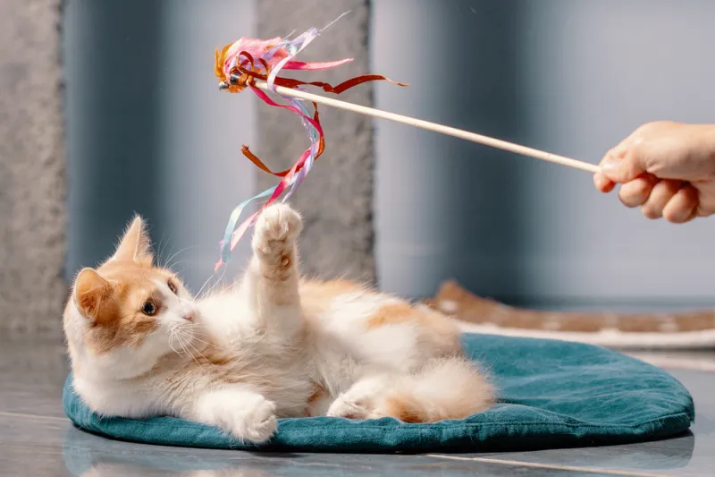
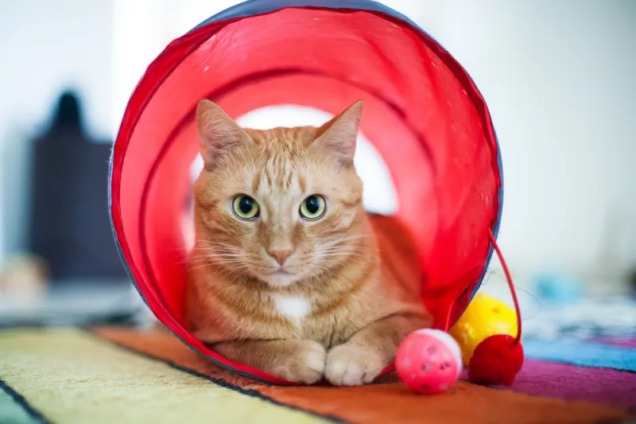
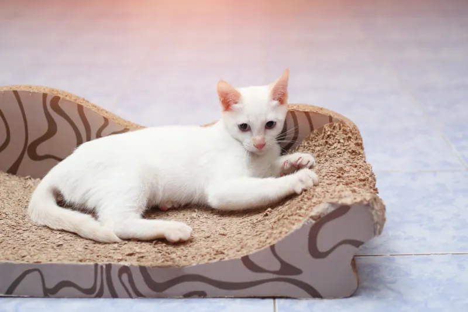
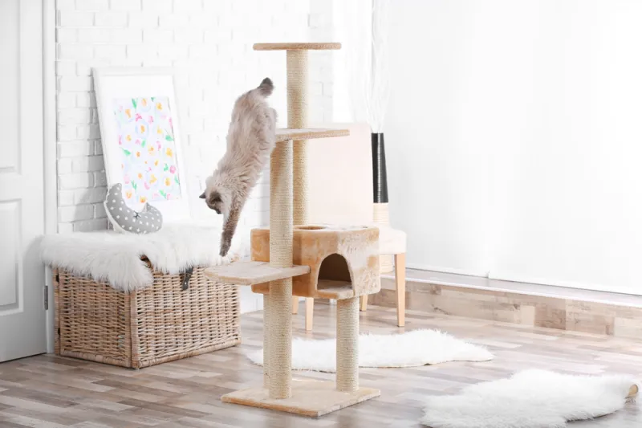
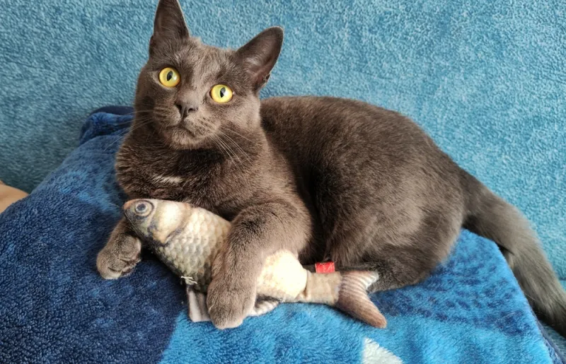
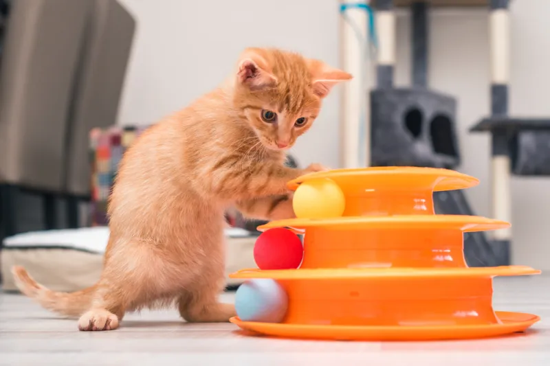
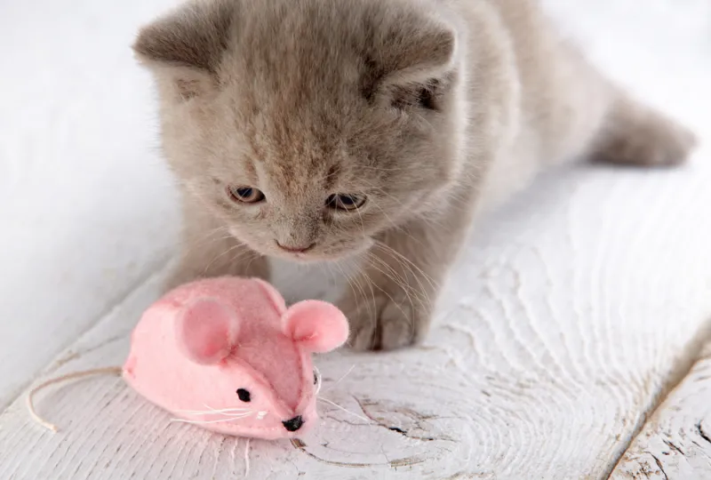
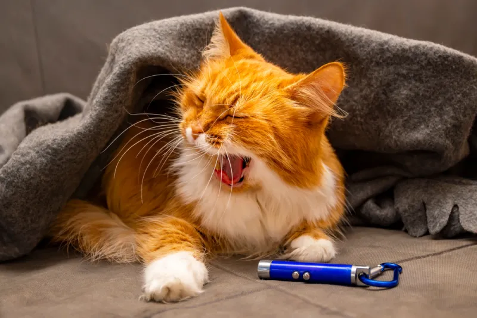
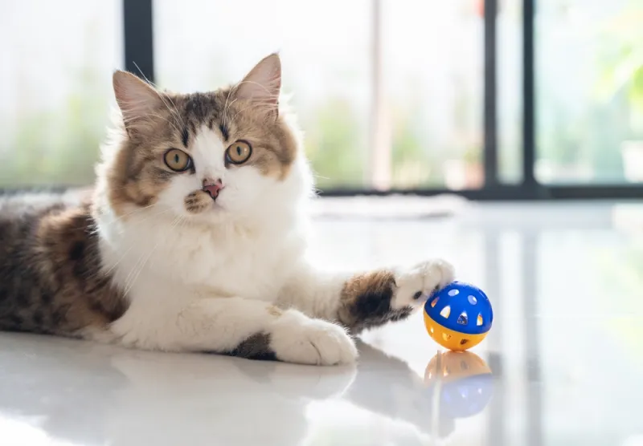
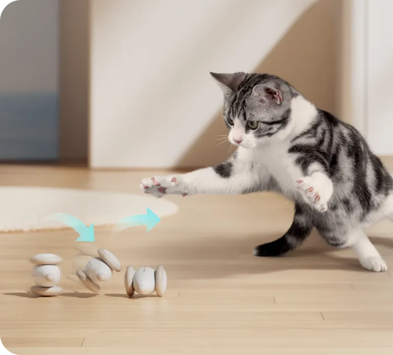

เรามีของเล่นแมวหลากหลายชนิดให้น้องแมวของคุณ
|  |
ไม้ตกแมวของเล่นแมวยอดฮิตที่ต้องมีติดทุกบ้าน ไม่ว่าแมวตัวไหนได้เจอรับรองว่าไม่พลาด ต้องขอแวะเล่นด้วยแน่นอน โดยไม้ตกแมวเป็นของเล่นที่นอกจากจะช่วยคลายเครียดแล้ว ยังช่วยเสริมความสัมพันธ์ระหว่างคนเลี้ยงและแมวอีกด้วย ราคา 39 บาท |
|  |
อุโมงค์แมวของเล่นที่จะช่วยเสริมสร้างสัญชาตญาณของแมว และช่วยให้แมวรู้สึกผ่อนคลาย เพราะแมวนั้นมีลักษณะนิสัยคล้ายเสือที่ชื่นชอบการซ่อนตัว อุโมงค์แมวจะช่วยเพิ่มทักษะ และช่วยให้แมวได้ปลดปล่อยสัญชาตญาณออกมา ทั้งยังช่วยให้แมวรู้สึกผ่อนคลาย ราคา 249 บาท |
|  |
ที่ลับเล็บแมวเป็นของเล่นแมวที่ต้องมี ด้วยลักษณะนิสัยของแมวที่มีมาตั้งแต่โบราณ คือต้องมีเล็บที่แหลมคมไว้ป้องกันตัวหรือต่อสู้ แมวจึงชอบลับเล็บอยู่เสมอ นอกจากจะช่วยสร้างอาวุธไว้ป้องกันตัวแล้ว ยังช่วยให้เกิดความผ่อนคลายได้อีกด้วย ราคา 199 บาท |
|  |
คอนโดแมวเป็นพื้นที่หลบภัยของแมวสำหรับคอนโดแมวที่มีตั้งแต่ขนาดเล็กไปจนถึงขนาดใหญ่ สูงหลายชั้น ยิ่งหากใครมีแมวหลายตัว ก็ต้องซื้อที่ขนาดใหญ่ขึ้นมาสักหน่อย เพราะแต่ละตัวมักจะมีที่นอนประจำของตัวเอง เพื่อไม่ให้ทะเลาะกันภายหลังได้ ราคา 1,449 บาท |
|  |
ตุ๊กตาแคทนิปสำหรับแมวด้วยความเป็นนักล่า แมวจึงมักมองหาวัตถุคอยเล่นตะครุบ เพื่อฝึกทักษะและความว่องไว และช่วยกระตุ้นสัญชาตญาณ พร้อมมอบความผ่อนคลายด้วยแคทนิปหรือกัญชาแมวที่ซ่อนอยู่ด้านในของตุ๊กตา ที่ช่วยให้แมวรู้สึกคลายเครียด ราคา 99 บาท |
|  |
รางบอลสำหรับแมวเป็นของเล่นแมวที่ช่วยเสริมทักษะ และความเพลิดเพลิน และยังสามารถเล่นพร้อมกันได้หลายตัว จึงเหมาะกับบ้านที่เลี้ยงแมวมากกว่า 1 ตัว โดยจะมีขนาดที่แตกต่างกัน ตั้งแต่รางเล็ก 1 ชั้น ไปจนถึงรางใหญ่ 4 ชั้น ราคา 349 บาท |
|  |
หนูจิ๋วสำหรับแมวเนื่องจากแมวนั้นมีความเป็นนักล่าและไหวพริบที่รวดเร็ว จึงชื่นชอบการจับของเล่นหนูมากเป็นพิเศษ เพราะช่วยเสริมทักษะ และกระตุ้นความเป็นนักล่า โดยของเล่นแมวหนูจิ๋วนั้นมีให้เลือกมากมาย ผลิตจากวัสดุที่หลากหลาย จึงควรเลือกให้เหมาะกับวัยของแมว เพื่อป้องกันการกัดแทะเศษวัสดุจากของเล่น ที่อาจทำให้เกิดอันตรายได้ ราคา 19 บาท |
|  |
เลเซอร์สำหรับแมวอย่างที่บอกว่าแมวนั้นเป็นสัตว์ที่มีสัญชาตญาณในการล่าสูง ดังนั้นจึงชื่นชอบของเล่นที่รวดเร็วว่องไว เพราะมีความคล้ายคลึงกับเหยื่อ เลเซอร์แมวเป็นอีกหนึ่งของเล่นแมวยอดนิยมที่สะดวกสบาย เพียงยิงเลเซอร์ไปตามพื้นที่ต่างๆ ให้แมวได้ไล่ตะครุบ ช่วยให้แมวได้ออกกำลังกาย ปลดปล่อยพลังงาน ราคา 269 บาท |
|  |
ลูกบอลกระดิ่งแมวลูกบอลพลาสติกที่ด้านในใส่กระดิ่งไว้ เพื่อดึงดูดความสนใจแมว อีกหนึ่งของเล่นแมวสุดฮิต เพราะราคาไม่แพง หาซื้อง่าย มีขนาดให้เลือกหลากหลาย ช่วยพัฒนาทักษะการเคลื่อนไหว ทำให้เกิดความสนุกสนาน และช่วยลดความเครียดได้อีกด้วย ราคา 19 บาท |
|  |
ของเล่นแมวอัตโนมัติหากแมวที่บ้านพลังเยอะ เล่นได้ทั้งวันไม่มีเหนื่อย ต้องมีของเล่นแมวชิ้นนี้ไว้เลย เพราะเป็นของเล่นแมวอัตโนมัติ วิ่งได้เอง มีดีไซน์หลากหลาย ทั้งรูปลูกบอล และรูปสัตว์ต่างๆ ควบคุมผ่านรีโมท ให้น้องแมวได้สนุกสนานเพลิดเพลินแบบที่เจ้าของไม่เหนื่อย ราคา 399 บาท |